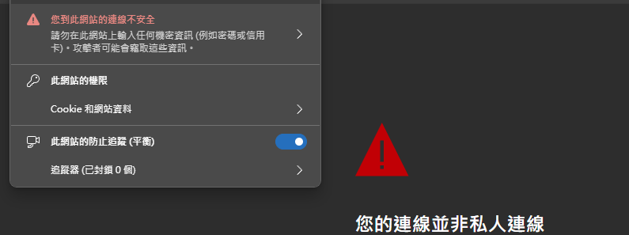

為何網站顯示「連線不安全」？
為何網站顯示「連線不安全」？

- 什麼叫做連線不安全?
- 如何才能確保連線更安全？
關鍵就在於 憑證
當你使用 http”s“ 連線時，就會要求網站提供憑證證明身份
並使用憑證加密通訊
憑證 是一種數位證書，用來驗證伺服器的身份並加密通信。
- 意義: 表示這個伺服器擁有”這個網域” 的所有權，也就是你連到正確的
- 舉例: 當你在網址打了 https://youtube.com
- 先向 DNS server 詢問 IP
- DNS 回 142.250.196.206
- 連上該 IP 後，server 會使用憑證向你證明他就是本人，不是假冒的
- 舉例: 當你在網址打了 https://youtube.com
- 內容
- 持有者 (e.g. youtube.com)
- 公鑰: 用於加密通訊
- 簽發機構 (CA): 由哪個已知的可信任機構簽名
- 證明憑證可信的關鍵第三方
- e.g.: Let’s Encrypt
- …
- 如何取得
- 向 CA 申請 (通常會使用 ACME protocol 與 CA 交流)
- 證明所有權
- HTTP-01 挑戰：在伺服器上放置特定的檔案，通過 HTTP 請求驗證所有權。
- DNS-01 挑戰：在 DNS 記錄中添加特定的 TXT 記錄
- 簡單來說，憑證就像是伺服器的「身份證」，保證您連接的是正確且可信的網站，而不是假冒的網站。
- 有憑證 –> 該網站是你打的網站，沒有被中間人假冒
- 但不知道網站本身是否真正可信或合法
- 沒憑證 –> 無法證明該網站是你查的
- 但有可能只是該網站沒申請憑證 或 憑證過期 而已
- 輸入網址
- DNS 回傳 IP
- 連上 IP 要求提供憑證
- browser 證實憑證可信後產生 session key
- 雙方使用 session key 將接下來的通訊加密及解密
- 旁人即使攔截了也讀不到內容
- 註冊 domain name
- 憑證就是證明你的伺服器有某網域的擁有權，所以第一步當然要先有個域名
- 通常要付費 (免費提供的都會特別醜)
- 有些路由器服務商有提供註冊
- 設定 DNS 記錄
- 域名提供商 通常可以讓你設定該 domain name 要解析到哪個 IP
- DNS server 是分佈式的，設定好後，其它人查詢的過程就會把這個設定逐漸廣播到全世界
- DDNS
- 若你的伺服器沒有固定 IP，那你可以使用 DDNS (Dynamic Domain Name System)
- 可以自動更新變動 IP 的 DNS 記錄
- 申請憑證
- 向 CA 申請
- 過程需驗證身份及伺服器所有權
本部落格所有文章除特別聲明外，均採用CC BY-NC-SA 4.0 授權協議。轉載請註明來源 Welcome！
評論